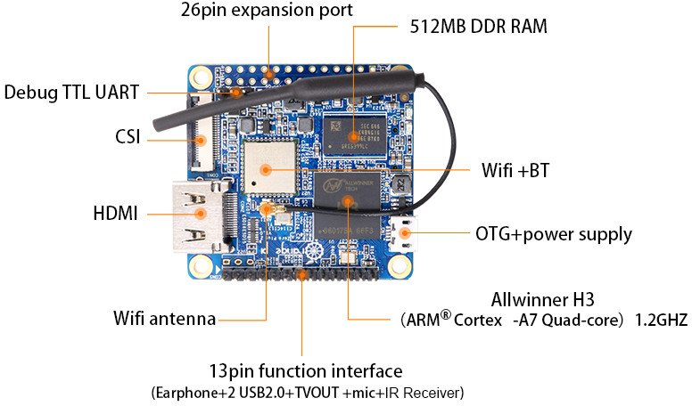

Про ценообразование, качество и сложность

Порою меня просто поражает такая вещь, как ценообразование. Понятно, что мы приходя в магазин, видим только верхушку айсберга, состоящую собственно из товара и его цены, мы не учитываем логистику, налоги, оплату труда продавцов, стоимость рекламы и массу всего прочего. Но если сравнить два товара, которые имеют примерно одни функции, примерно одну сложность производства, но цена которых отличается в два - четыре раза, возникают резонные вопросы - за что мы платим?
Год назад я видел, как один парень в Связном покупал колонку JBL за 12500 рублей в кредит. Портативную. Колонку. В кредит. Я знаю, что JBL способны объединяться и работать как мультирум. Но наверное мне это не нужно до такой степени, чтобы приборетать это в кредит. Притом, основную функицю - "воспроизведение музыки через BT" моя колонка, приобретённая в китае на распродаже за 1150р, то есть, в десять с лишним раз дешевле, выполняет на ура - звучит достаточно чисто, а её громкость для нашей квартиры избыточна.
Примерно то же самое происходит со многими другими вещами, которые нас окружают. Например, наушники. Давно уже подсел на фирму Awei - за 10 долларов можно взять беспроводную гарнитуру с неплохими характеристиками. Были у меня и Motorola Buds две разных версии и Sony WI-C300 - как и любые другие гарнитуры их постигала одна и та же участь - ломались провода близко от мест вхождения либо в наушник, либо в саму гарнитуру. А если и гарнитура за 3500р. и гарнитура за 650р. служат и умирают одинаково, то какой смысл платить больше?
Или ножи. Можно купить себензу за 160 с лишним тысяч рублей или кастом от Синкевича, но если вам нужен нож, а не произведение искусства, то функции свои будет выполнять и какой-нибудь Ontario Rat II или Kershaw SkyLine. Разница в качестве выполняемой им работы и затраты на обслуживание (например, более частая заточка) не окупят разницу в цене.
На работе так же масса примеров. И имя им - макбуки. Макбуки дохнут в разы чаще и быстрее большинства остальных ноутбуков, теперь я в этом убеждён. В сервисе меня давно знают и любят, ставят в начало очереди на ремонт, делают скидки - я там частый клиент. Сослуживец взял макбук про за 120 с лишним тысяч рублей - спустя неделю на нём отпаялся видеочип, макбук жил в сервисе пару-тройку недель, пока не пришла плата под замену. Основной парк рабочих макбуков у нас составляют старые прошки преимущественно 2011 - 2012 годов выпуска. Людей у нас работает немного, но за последнее время я сносил в общей сложности 5 макбуков в сервис преимущественно с одним и тем же заболеванием - вспухают аккумуляторные батареи, причём одна так, что выдавила тачпад над плоскостью клавиатуры. Через мои руки прошло множество ноутбуков производства фирм, отличных от apple - вздутую батарею у них видел два раза в своей жизни. Ноутбуку, на котором живёт моя мама, в текущий момент 11 лет. Да, батарея села, но ничего не вздулось. У отца остался Dell Inspiron, которому больше 15 лет - тоже никаких проблем - работает. Одним словом, примеров много. Ещё у одного из макбуков так же отпаялся чип. У другого - перестала работать пара кнопок на клавиатуре. Каким-то магическим и непонятным для меня образом выходят из строя шлейфы SSH/DVD. Причём судя по количеству предложений на эти шлейфы на каком-нибудь амазоне, проблема имеет массовый характер. Замена вентиляторов охлаждения - ещё на трёх машинах. Вышел из строя ретина монитор 27'' - просто погас. Вчера после обновления MacOS Mojave с 10.14 на 10.14.1 один из ноутбуков просто перестал работать. Кстати, помимо этой проблемы, батарею на нём тоже пришлось менять - она начала вспухать (стОило это 7500р, кстати). Макбуку три года, кажется. По проблемам с осью - после логина чёрный экран и курсор. Восстановление из бекапа с таймкапсулы не помогло - бекап так же оказался повреждён. First Aid выдавала ошибку несовпадения длины ключа при попытке восстановления снапшота. В общем, в сервисе восстановили данные некоей сервисной утилитой и то, похоже, не полностью, накатили операционку по-новой и залили данные обратно. На работе снял винт с таймкапсулы, прогнал смарт, тест поверхности - железо живо и чувствует себя отлично. На маке тоже с ssd всё прекрасно. Я уже молчу об апдейтах, после которых можно было залогиниться на любой мак с логином root и пустым паролем. Да, ошибки бывают у всех, но тут их концентрация достигает немыслимых пределов. В том числе и критических ошибок. При этом цена макбука существенно выше цены другого ноутбука с таким же железом. Что такого даёт макос по сравнению с той же виндой, от чего все маководы улыбаются и продолжают жрать кактус - мне решительно непонятно. Мне впрочем, не нравится ни то, ни другое. Одним словом, наличие MacOS как аргумент может быть состоятельным разве что для тех, кто давно и прочно работает с видео и графикой, кому нужен именно Final Cut или что-нибудь подобное специфическое. Любой среднестатистический пользователь может привыкнуть и к одной инфраструктуре и к другой, подобрать со временем нужный набор софта и сделать себе уютно и удобно (но конечно же, при этом активно выражать своё недовольство в процессе перехода тем, что на новой платформе всё не так как он привык). Возможно, жизнь на окнах ещё тяжелее и печальнее, не мне судить, но тогда мне остаётся только порадоваться тому, что 15 лет назад я свернул с этой дороги и пожелать удачи идущим. Агитировать кого-либо на что-либо я уже давно перестал. Зачем на скриншоте я привёл топовый макбук? Просто чтобы напомнить, что большинству людей, населяющих нашу страну, для того, чтобы купить топовый макбук, нужно работать год и не кушать. За железо вы заплатите чуть менее трети миллиона, а софтовые сюрпризы вполне могут остаться те же, что и с макбуком пятилетней давности. В один прекрасный момент он просто может отказаться работать или вам придётся заменить батарею через три-четыре года. Сколько это будет стОить, я даже боюсь представить, а работать может быть необходимо прямо вот сейчас, а не через три дня.
Что такое вообще статус и престиж? Что чувствуют девочки, которым подарили айфон и которые не знают, зачем им нужен именно айфон? Откуда в людях рождается это желание показать другим, что ты не хуже? Я могу представить, зачем дорогая машина или телефон нужны бизнесмену, его статус - лакмусовая бумажка, маркер, показывающий, что его дела идут хорошо, что он состоятелен. Неужели, скажем, студенткам непонятно, что для них последний айфон при очевидном отсутствии доходов должного уровня, является уже другой лакмусовой бумажкой с едва заметной надписью "насосала"? Неужели никому не кажется смешным сочетание потрёпанной дешёвой куртки с китайского рыка и SGS9? Хуже только в Турции - сотни небольших магазинов, продающих за десяток баксов разнообразные Gucci, Versace, Louis Vuitton и прочий PRADA, отсутствующая надпись "Made in Shenzhen" на которых становится явно заметна аж за километр. И ведь самое страшное, что спрос формирует предложение и следовательно, где-то по улицам в огромных количествах ходят все эти Ляо Виттон, Гуанхуччи, Венминьсаччи, переругиваясь в автобусе с прочими Шайнелиями. Странно, но я их вокруг себя не замечаю. И это не может меня не радовать.

Но есть ведь и другая сторона картины, есть ведь и позитивные примеры ценообразования, хорошие сочетания цены и качества. Только они как ни странно, в массе своей приходят со стороны всё того же Китая, что и вышеописанные сумки с лейблами. Даже если брать в рассчёт стоимость китайских товаров в России, цены не могут не радовать. Далеко за примером ходить не нужно - возьмите теж же Xiaomi, например. И они не единственные. Я, например, работаю второй год на ноутбуке, который обошёлся мне в 12 тысяч рублей и не испытываю пока необходимости заменить его на другой. Мне вот только другое интересно - удельная сложность производства продукта. Например, почему струганная балясина для перил на строительном рынке стоит дороже, чем какой-нибудь дешёвый одноплатный компьютер, скажем, OrangePI Zero? Для производства первой - нужно спилить дерево и обработать на токарном станке. Квалификации для того, чтобы произвести эту работу, много не нужно, навыков тоже. При наличие токарного станка и пары дней на обучение, такое сделать может каждый. Для производства того же одноплатного компьютера нужен не один месяц работы нескольких квалифицированных инженеров, несколько сотен деталей, каждая из которых (а SoC - System On Chip в особенности), требует сложного производственного процесса, квалифицированных рабочих, производственных мощностей. Да, в Китае дешёвая рабочая сила. Да, производство крупных оптовых партий компонентов позволяет снижать стоимость конечного продукта. Но разница в сложности производства всё-таки не на один порядок различается и даже не на два, это просто несопоставимо и я порою не могу перестать об этом думать.
Теги: mac, knifes, мысли-вслух